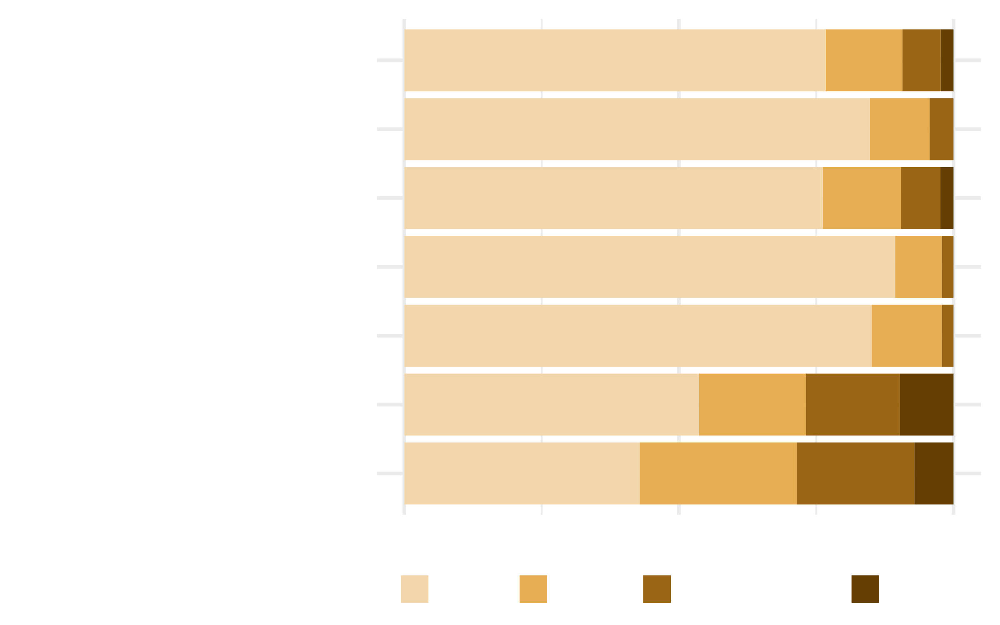

[comment]: # (Compile this presentation with the command below) [comment]: # (mdslides index.md && mv index/index.html .) [comment]: # (The list of themes is at https://revealjs.com/themes/) [comment]: # (The list of code themes is at https://highlightjs.org/) [comment]: # (Pass optional settings to reveal.js:) [comment]: # (markdown: { smartypants: true }) [comment]: # (Other settings are documented at https://revealjs.com/config/) ### Designing a CURE for CS1 ---------- Kevin Buffardi, JoAna Brooks, David Alexander [California State University, Chico](https://csuchico.edu/) <img src="qr-code.png" alt="QR code" width="30%"> </img> <sub>[LearnByFailure.com](https://learnbyfailure.com/research/)</sub>
### What is a CURE? * <u>**C**</u>ourse-based <u>**U**</u>ndergraduate <u>**R**</u>esearch <u>**E**</u>xperience * Using **scientific practices**, * Addressing **novel** scientific questions, * Impact **beyond the classroom**, * **Collaboration**, and * **Iteration**
### What is a CURE? * Originates in life sciences * At time of our study, few [Computer Science classes](https://serc.carleton.edu/curenet/collection.html?q1=sercvocabs__513%3A8) * Serving environmental science, genomics, etc. * In Upper-division courses
### Why CURE? * Undergraduate research is a high-impact practice * Extracurricular research is unscalable and inequitable * Integrating into a course involves **everyone** * Reveal synergy between research and entrepreneurial mindset
### CURE in CS1 * Primary challenge: Involve **CS1** students in CURE * Participate in **research** * On a **Human-Computer Interaction** (HCI) project **within the major**
### Color Vision Project * Digital visualizations often encode data via color * Poor color combinations can be difficult to differentiate * Color blindness further complicates perception
### Color Vision Project #### Example [via /r/dataisbeautiful](https://www.reddit.com/r/dataisbeautiful/comments/16jmv4o/car_sizes_from_1970s_to_present_oc/) <img src="car-colors.png" alt="Chart with 9 car manufacturers each color-coded" width="60%"> </img>
### Color Vision Project #### Deuteranomaly simulation [via Pilestone simulator](https://pilestone.com/pages/color-blindness-simulator-1) </img>
### Color Vision Project #### Protanomaly simulation [via Pilestone simulator](https://pilestone.com/pages/color-blindness-simulator-1) </img>
### Color Vision Project #### Group Roles * <u>**Analyzer**</u> <small>provided a palette of colors, evaluate to what degree its color combinations are problematic for people with a particular form of color blindness;</small> * <u>**Optimizer**</u> <small>provided a palette of colors, adjust the colors when necessary to optimize the percentage of people who will be able to easily detect the color differences;</small> * <u>**Generator**</u> <small>provided a number of distinct colors needed (2 or more), create a palette of colors that avoid or minimize problematic color combinations; and</small> * <u>**Designer**</u> <small>provided a base color, create a list of five more colors that do not have problematic color combinations.</small>
### Color Vision Project #### Iterations * **Minimum Viable Product** (MVP): <p>Most value to the customer for the least effort</p> * **Project deliverables**: <p>Three **cumulative** iterations of MVPs</p> * **Adaptation**: <p>Reflect how next MVP could improve</p>
#### Iteration 1 Requirements <table> <tr> <th style="nowrap"><small><b>MVP #1</b></small></th> <th><small>Useful Progress</small></th> <th><small>Variables</small></th> <th><small>Standard IO</small></th> <th><small>Decisions</small></th> <th><small>Iteration</small></th> <td><small>Functions</small></th> </tr> <tr> <td> </td> <td><small>Initial MVP</small></td> <td><small>Multiple + array/vector</small></td> <td><small>Console input & output</small></td> <td><small>3+ different controls</small></td> <td><small>1+ loop</small></td> <td><small>2+ return types</small></td> </tr> </table>
#### Iteration 2 Requirements <table> <tr> <th><small><b>MVP #2</b></small></th> <th><small>Useful Progress</small></th> <th><small>Parameters</small></th> <th><small>File IO</small></th> <th><small>Style</small></th> </tr> <tr> <td><small>MVP #1 <i>and</i></small></td> <td><small>Adapted MVP</small></td> <td><small>Pass-by-reference & Pass-by-value</small></td> <td><small>fstream input/output</small></td> <td><small>Adopt style guide</small></td> </tr> </table>
#### Iteration 3 Requirements <table> <tr> <th><small><b>MVP #3</b></small></th> <th><small>Useful Progress</small></th> <th><small>Classes</small></th> </tr> <tr> <td><small>MVP #2 <i>and</i></small></td> <td><small>Final MVP</small></td> <td><small>1+ Class</small></td> </tr> </table>
### Entrepreneurial Mindset * [CURE-E](https://www.csuchico.edu/curee/) project * Integrate [Entrepreneurial Mindset](https://nfte.com/): * Managing risk * Taking initiative * Persisting * Learning from failure * Collaboration * Seeking opportunities to improve people’s lives
### Entrepreneurial Mindset * [Agile](https://agilemanifesto.org/) and [Lean](http://www.poppendieck.com/) software development: * Managing risk: **Identifying [MVP](https://www.syncdev.com/minimum-viable-product)** * Taking initiative: **Novel solution to role** * Persisting: **Competency-based grading for cumulative requirements** * Learning from failure: **Adaptation in each iteration** * Collaboration: **Share insights within groups** * Seeking opportunities to improve people’s lives: **Innovate accessibility**
### Formative Lessons Learned 1. Research requires familiarity with some **domain knowledge** and scaffolding enough expertise does not scale well when the domain is too broad 2. CUREs that do not have funding to provide **incentives for stakeholder participation** will suffer attrition in seeking valuable feedback 3. Students are not experienced researchers and require more structured guidance on how to **critically evaluate a product/result**
### Outcomes * Post-semester surveys on connections to STEM research * Positive averages for each concept/activity * Some room for improvement
### Outcomes | Theme || *a* | Max | Mean | s.d. | | ----- || ----- | ----- | ----- | ----- | | Self-efficacy || *0.789*\* | 5 | 3.615 | 0.559 | | Identity || *0.884*\* | 5 | 3.809 | 0.728 | | Community || *0.856*\* | 6 | 4.258 | 0.941 | | Values || *0.891*\* | 6 | 4.742 | 0.992 | | How often || 0.678 | 4 | 3.619 | 0.424 | | How apparent || *0.940*\* | 6 | 4.739 | 0.733 | | Entrep. Mindset || *0.766*\* | 6 | 4.971 | 0.816 |
### Outcomes  </img>
### Post-Hoc Reflections * ChatGPT was made public in the midst of implementation * Initially: * Poor solution * Acknowledged problems, but no corrections offered
### ChatGPT 3.5 Excerpt: ``` const std::array<std::string, 6> colorPalette = { "Red", "Green", "Blue", "Yellow", "Purple", "Orange" }; int main() { std::cout << "Color palette for people with color blindness:" << std::endl; for (const auto &color : colorPalette) { std::cout << color << std::endl; } return 0; } ``` **Me: that is a terrible solution**
### ChatGPT 3.5 *I apologize if the previous solution did not meet your requirements. It was an example of a simple program that illustrates how to create a color palette. There are different ways to create a color palette that is accessible to people with color blindness and some of the best practices include:* [...] Avoid using similar colors, such as red and green, which can be difficult to distinguish for people with color blindness **Me: your first two colors are literally red and green**
### ChatGPT 3.5 Excerpt, **after the semester** ``` struct Color { int r, g, b; // Constructor Color(int red, int green, int blue) : r(red), g(green), b(blue) {} }; double calculateColorDistance(const Color& c1, const Color& c2) { // Euclidean distance between two colors in RGB space return sqrt(pow(c1.r - c2.r, 2) + pow(c1.g - c2.g, 2) + pow(c1.b - c2.b, 2)); } Color generateDistinctColor(const Color& baseColor, double minDistance) { // Generate a color with a minimum distance from the base color Color newColor = baseColor; // Randomly adjust the RGB values newColor.r = (baseColor.r + rand() % 256) % 256; newColor.g = (baseColor.g + rand() % 256) % 256; newColor.b = (baseColor.b + rand() % 256) % 256; while( calculateColorDistance(baseColor, newColor) < minDistance ) { newColor.r = (newColor.r + rand() % 256) % 256; newColor.g = (newColor.g + rand() % 256) % 256; newColor.b = (newColor.b + rand() % 256) % 256; } return newColor; } ``` ...and so on.
#### Designing a CURE for CS1 ---------- <small>Presented at [ITiCSE'24](https://iticse.acm.org/2024/) in Milan, Italy. The [paper is available via ACM](https://dl.acm.org/doi/10.1145/3649217.3653573). To cite this paper, use the following reference in your bibliography:</small> > <small style="text-align: left; width: 100%;">Kevin Buffardi, JoAna Brooks, and David Alexander. 2024. Designing a CURE for CS1. In Proceedings of the 2024 on Innovation and Technology in Computer Science Education V. 1 (ITiCSE 2024). Association for Computing Machinery, New York, NY, USA, 660–666. https://doi.org/10.1145/3649217.3653573</small> <small>Or import the following *BibTeX* reference:</small> > <small style="text-align: left; width: 100%;"> @inproceedings{10.1145/3649217.3653573, author = {Buffardi, Kevin and Brooks, JoAna and Alexander, David}, title = {Designing a CURE for CS1}, year = {2024}, isbn = {9798400706004}, publisher = {Association for Computing Machinery}, address = {New York, NY, USA}, url = {https://doi.org/10.1145/3649217.3653573 }, doi = {10.1145/3649217.3653573}, pages = {660–666}, numpages = {7}, location = {Milan, Italy}, series = {ITiCSE 2024}} </small>
#### Designing a CURE for CS1 ---------- <small>This presentation is accessible at [learnbyfailure.com/designing-cure](https://learnbyfailure.com/designing-cure) and its source is available on [GitHub](https://github.com/kbuffardi/designing-cure/).</small> <img src="qr-code.png" alt="QR code" width="30%"> </img> <small>This material is based upon work supported by the National Science Foundation under grant [\#1953751](https://www.nsf.gov/awardsearch/showAward?AWD_ID=1953751). Any opinions, findings, and conclusions or recommendations expressed in this material are those of the author(s) and do not necessarily reflect the views of the National Science Foundation. </small> <small>[Back to LearnByFailure](https://learnbyfailure.com/research/) </small>